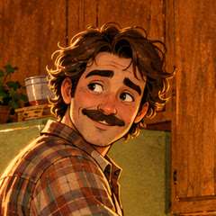
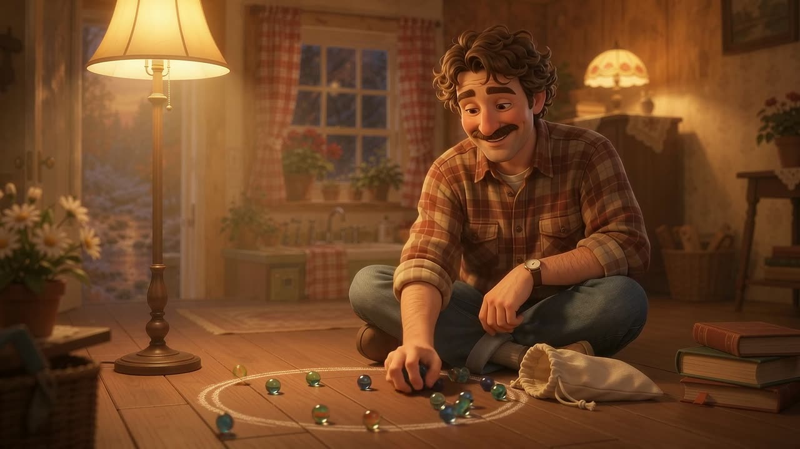

Marbles with Dad
Clara 0 · Dad 0
Dad
Marbles with Dad
Saturday morning in the parlor. Clara tips the marble bag out onto the boards, Dad settles down beside her, and the chalk ring is ready.
How hard is Dad?
How to play
- Left and right arrows move your shooter around the ring.
- Up and down arrows turn your aim. Or point at the floor where you want to aim.
- Hold the space bar (or Hold to flick) to build power, then let go. The longer you hold, the harder the flick. The meter stays full until you let go.
- A quick tap on the floor only aims. Press and keep holding on the floor to flick from there.
- Knock a marble out of the ring and it is yours, and you shoot again. First to 7 marbles wins.
- Bernie may join in. He does not know the rules.
When does Bernie flop onto the marbles?
Dad's lines are written for the game (one is from Season 2, Episode 1). His voice is AI-generated.

Good game!
Settings
Look
Text size
Shot helper (shows where your shooter and the marble will go)
How hard is Dad?
Power meter speed
Music
Sounds
Dad's voice
Sound captions
Calm motion (Bernie walks in slowly, no lamp flicker)